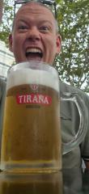
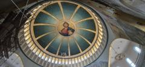
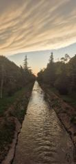
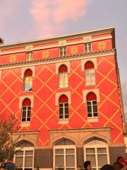
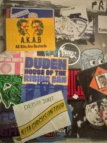
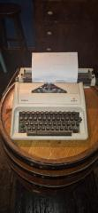
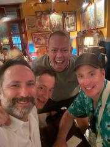
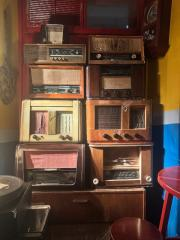

Do you wanna ride my car….
Not a lot of people know this but (according to Patch) Benny Hill has god like status in Albania……Despite being a multi-millionaire, he continued with the frugal habits he picked up from his parents, such as buying cheap food at supermarkets, walking for miles rather than paying for a taxi unless someone picked up the tab for a limo and regularly patching and mending the same clothes.He also never owned a car, despite having a valid driving licence.
If Benny Hill was alive now he sounds like a perfect candidate to come on a jimbo tour and would more than likely walk away with the man of the tour. He would also settle into Albanian life very quickly as the Albanias have only started to drive in the last couple of years.
As you will have ascertained Jimbotours 17 has started in Albania……actually it started in Luton on a dark, rainy Wednesday evening and having now been to both places you wouldn’t be able to guess which place was the war torn ex communist state!
We arrived to a hot and sunny Tirana airport and following the scariest taxi ride in all of the previous tours - we arrived at the blue door hostel……unfortunately I had booked it for the wrong day and they were full (admin has never been my strong point)…..this meant we had to risk our lives by trekking around the city looking for a bed for the night. Following a visit to 2 further hostels via streets which looked they’d been freshly bombed that morning and avoiding getting hit by falling render been taken off a wall by a man using a ladder to hack it off we arrived at our party hostel for the night.
It was a really cool hostel. Very relaxed and fresh fruit and vegetables throughout to enjoy.
We headed out for the day to enjoy a traditional Albanian meal followed by a walking tour. After 17 JT’s history was made in Tirana as Shaun was present at the start and end of a walking tour (albeit he was in the pub of the majority of the middle bit)
Tirana has a really nice relaxing vibe to it…..crossing the road is really scary…..apart that it’s cool. We did a little pub crawl and relaxed into chatting and having the craic.
The only negative point is that patch has already lost his chance of winning man of the tour as his Benny Hill fact that he was so proud of was wrong…….it was Norman Wisdom who is the national hero in Albania. Unlucky Patch but that’s why it’s not called Patch Tours…..
Photographs


{kind=link}

{kind=link}

{kind=link}
{kind=link}

{kind=link}

{kind=link}

{kind=link}

{kind=link}

{kind=link}
